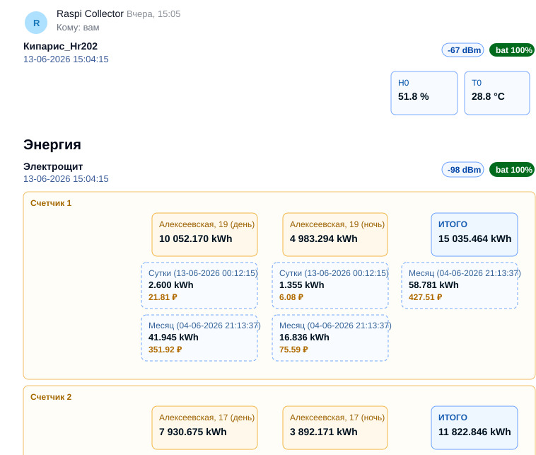

Локальные измерения
USB-донгл продолжает использовать собственные каналы DS18x20, HR202 и термистор как обычный TPlung датчик.
Сценарий для роутеров
В этом сценарии роутер Keenetic работает как центральный узел: USB-донгл TPlung делает локальные измерения на собственных датчиках, собирает телеметрию по BLE от других TPlung устройств, публикует значения в MQTT брокер, отправляет ежедневные отчеты на e-mail и может принимать сервисные команды через почтовый ящик.
USB-донгл продолжает использовать собственные каналы DS18x20, HR202 и термистор как обычный TPlung датчик.
Параллельно донгл принимает advertising от других TPlung устройств и передает их показания в систему роутера.
Роутер публикует локальные и BLE-данные в MQTT брокер, ведет архив и отправляет ежедневную сводку на e-mail.
Почтовый обработчик принимает разрешенные письма, выполняет сервисные команды и отправляет результат обратно.
Пошагово
Ниже опорная последовательность для стенда Keenetic + Entware + TPlung. Набор пакетов и скриптов может отличаться в вашей сборке, но логика этапов остается той же.
Разверните Скачать образ Entware mipsel для Keenetic на USB-накопитель. Образ сделан минимальным; после записи на флешку при необходимости расширьте раздел до нужного размера в GParted. Это USB-модели Keenetic на little-endian MIPS/MediaTek MT7621 и MT7628: например Giga KN-1010, Ultra KN-1810, Viva KN-1910, Extra KN-1711 и Omni KN-1410.
Подключите USB-донгл к роутеру - все готово к работе.
Задайте параметры в конфигурационных файлах на разделенном SMB-шаре.
MQTT брокер
В конфигурационных топиках удобно хранить e-mail адрес, переключатель отчетов и параметры supervise.
Settings/Supervise/mailAddress Settings/Supervise/reportToEmail Settings/Supervise/reports/...
Данные датчиков и энергометрии публикуются в прикладные топики и могут быть связаны с устройствами Home Assistant.
Thermo/... Energy/... Binding/...
Для диагностики можно подписаться на дерево топиков и убедиться, что значения обновляются в реальном времени.
mosquitto_sub -v -t '#'
Ежедневные e-mail отчеты
Основной ежедневный сценарий формирует HTML-отчет устройств: датчики, энергометрия, свежесть данных, RSSI, состояние батареи и расчет потребления по тарифам, если они заданы в конфигурации.
Карточки датчиков с именем/MAC, временем последнего значения, RSSI, состоянием батареи, температурой и влажностью.
Параметр batt_status попадает в отчет как отдельный бейдж, а уведомления могут приходить с состоянием OK или FAILURE.
Показания энергометрии, суммы по парным каналам, прирост за день/месяц и стоимость в рублях при настроенном tarif.cfg.
Ниже упрощенный пример фрагмента отчета, который может отправляться прямо в body письма без вложений.

E-mail управление
Роутер проверяет входящую почту, забирает свежие команды и не требует внешнего входящего подключения к объекту.
imapfilter mailbox: hostname
Обрабатываются только свежие письма от адресов из allow-list; остальные отправители и темы игнорируются.
From: allowed@example.com Subject: command
В text/plain части письма передается Perl-хеш: список команд run и, при необходимости, список файлов get.
{
run => ['date', '/opt/usr/local/bin/report_total.pm'],
get => ['/opt/usr/local/data/settings.conf']
};
Результат выполнения приходит обратным письмом; запрошенные файлы упаковываются в 7z-архив и прикладываются к ответу.
Subject: results: command Attachment: 7z_data.7z
Эксплуатация
Храните копии `tarif.cfg`, `mac2name.cfg` и пользовательских скриптов, чтобы быстро восстановить систему после замены носителя.
Добавьте контрольный MQTT heartbeat, проверку отправки e-mail и правила OK/FAILURE для батареи, температуры и напряжения.
Оставьте MQTT для онлайн-автоматизации, а e-mail отчеты для ежедневной аналитики и журнала состояния объекта.